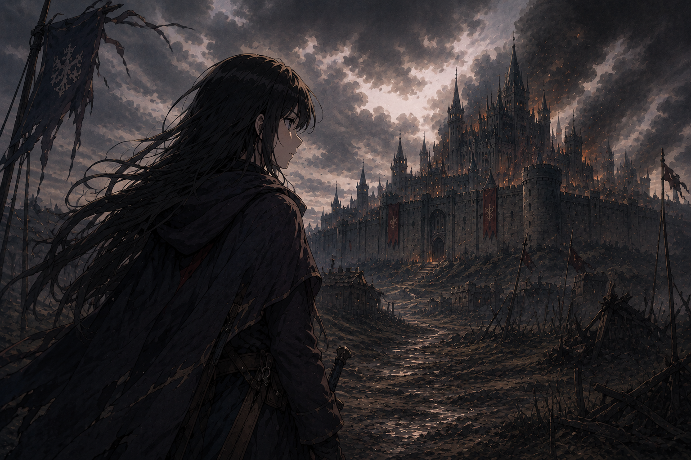
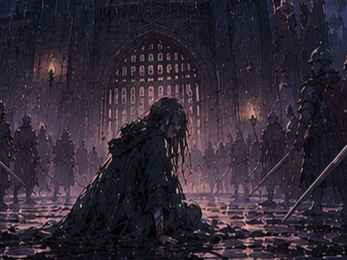

Story
선택이 운명을 바꾼다
한 장면의 작은 선택이 다른 길, 다른 진실, 다른 엔딩으로 이어집니다.
INTERACTIVE FICTION
동생의 죽음, 왕국의 저주, 그리고 당신이 선택할 마지막 계약.
짧은 선택 하나가 길을 바꾸고, 끝은 언제나 다른 이름으로 남습니다.
Story
한 장면의 작은 선택이 다른 길, 다른 진실, 다른 엔딩으로 이어집니다.
Structure
문장과 풍경이 이어지는 텍스트 중심의 경험 속에서 몰입감을 높였습니다.
Ending
도감과 흔적을 따라가며 어떤 선택이 당신을 구원했는지 확인해보세요.
Experience
각 장면은 고요한 풍경과 비밀스러운 인물의 흔적을 통해, 플레이어가 자신의 해석을 더 깊이 만들어낼 수 있도록 설계했습니다.

